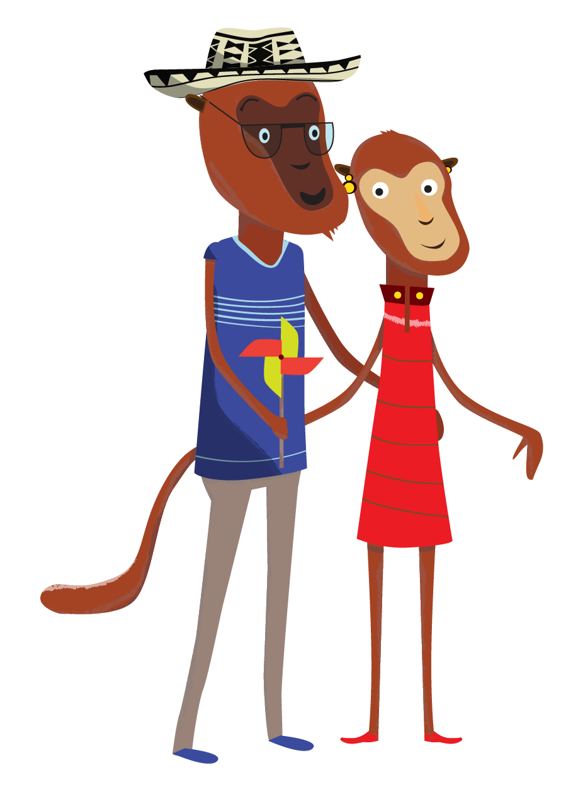
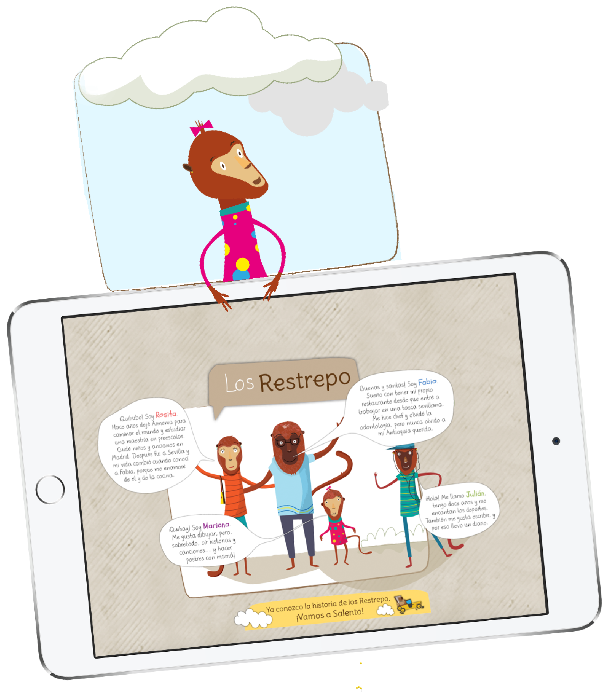
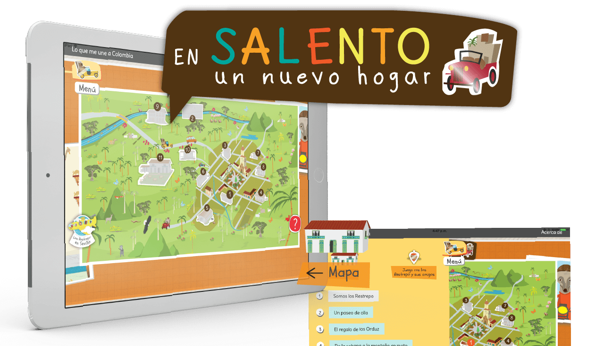
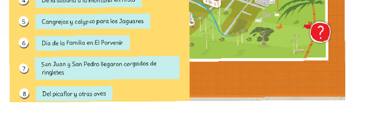
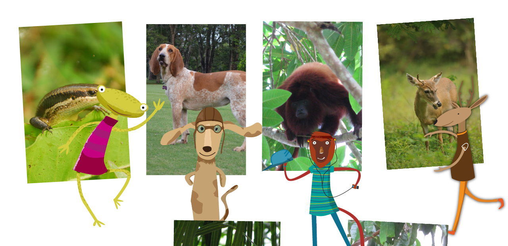
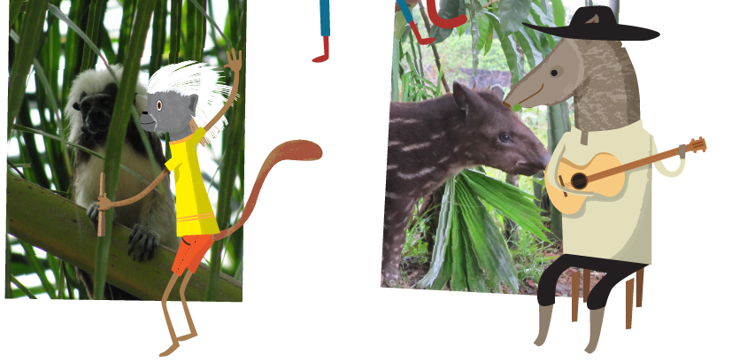
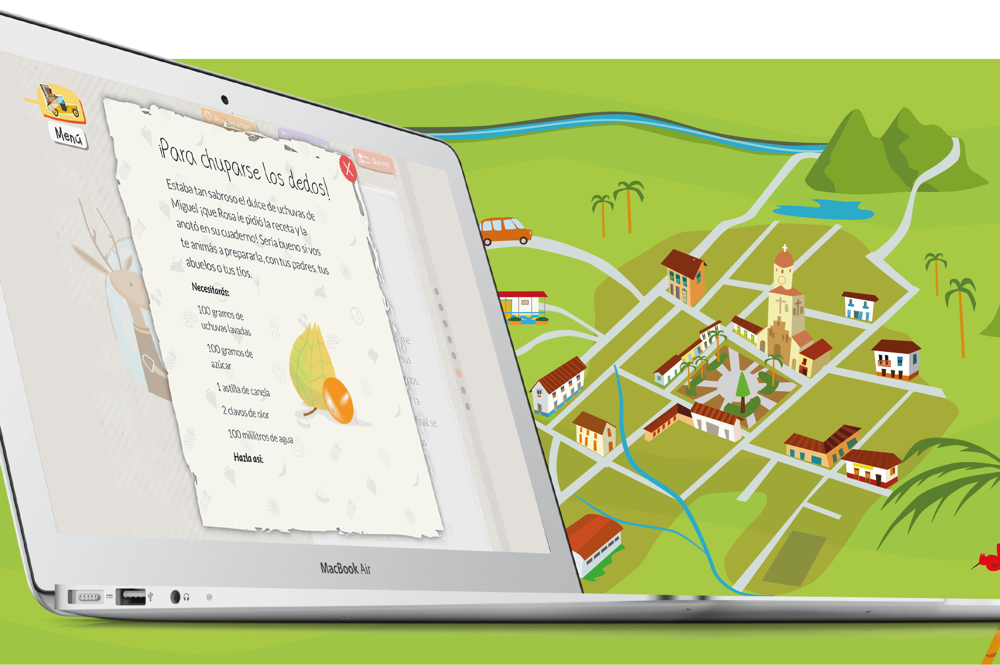
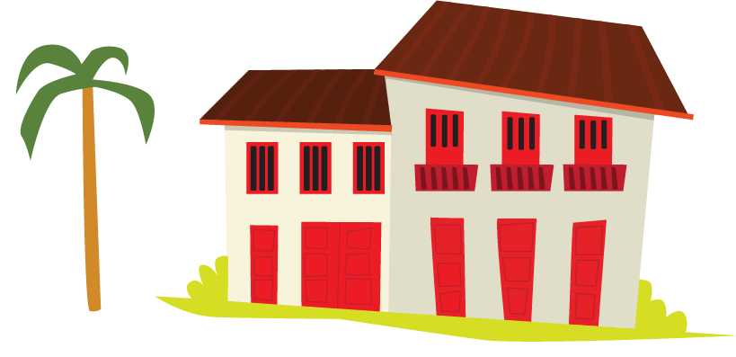
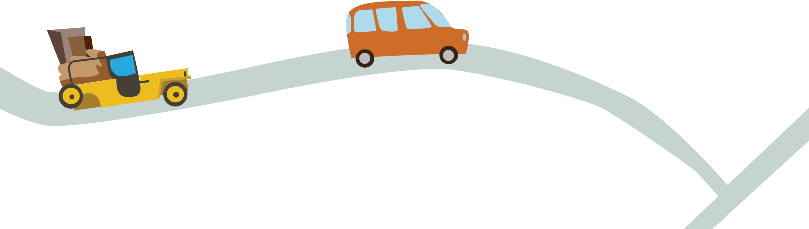
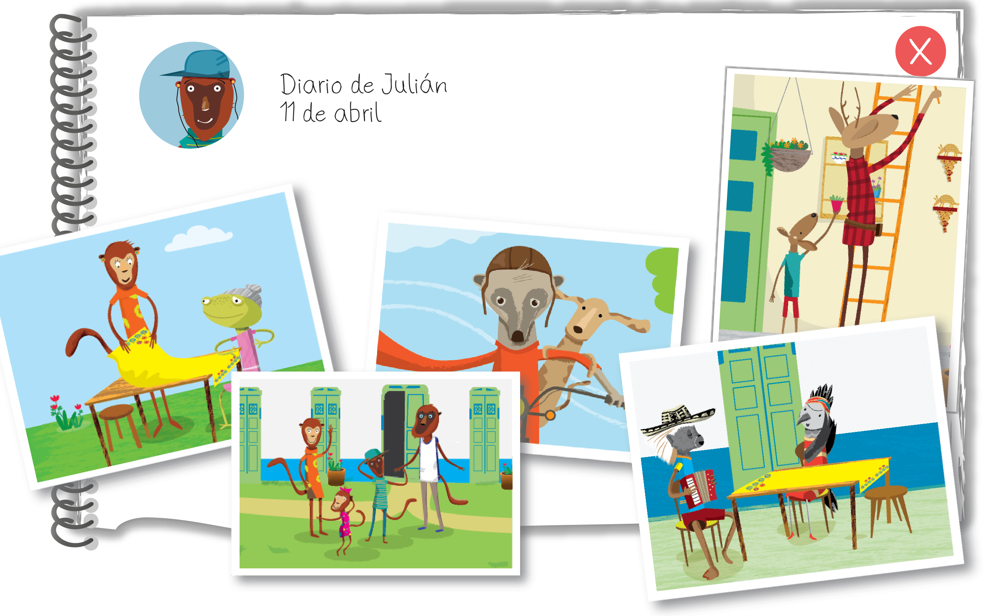

Cliente: Fundalectura - Cancillería de Colombia
Nombre: Lo que me une a Colombia 2
Plataforma: web, android
Link: Colombia Nos Une 2
Año: 2017
En este segundo volumen del libro Lo que une a Colombia, un relato pensado para niños colombianos que viven en el exterior y están próximos a volver a su país. Es un libro informativo, donde conocemos regiones y costumbres de Colombia, pero también una historia sobre lo que significa volver a casa después de tantos años.
El primer volumen también lo hicimos nosotros, y pueden verlo acá.

La familia Restrepo retorna a Colombia después de muchos años en España. Quieren abrir un restaurante en Salento y todos sus nuevos amigos serán de gran ayuda.



El mapa de Salento es el índice principal de este relato. A medida que los lectores avanzan, van completando el mapa de este famoso pueblo en la zona cafetera. Cada capítulo relata la historia de una familia, y cada familia viene de una región distinta de Colombia. Así, los chicos aprenden sobre la diversidad del país y sus gentes.


Estos son los personaje que inspiran la historia: animales endémicos del país, algunos de ellos, tristemente, en riesgo de extinción.


En la mayoría de capítulos, los lectores encontrarán recetas típicas, fáciles de preparar.


